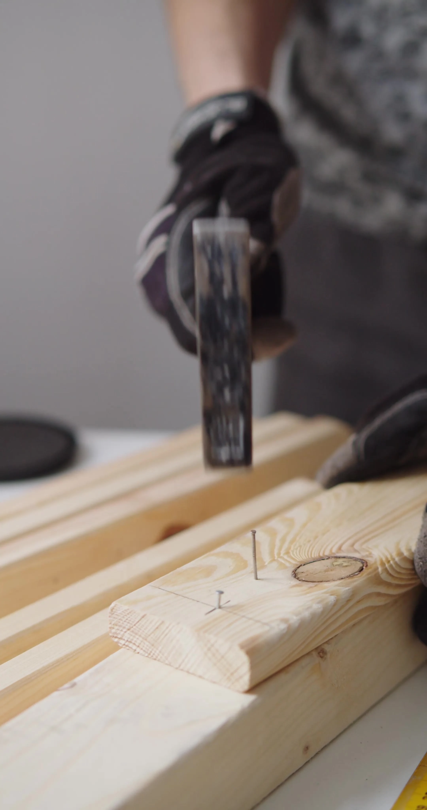

Reliable & Professional
Clear scope, careful work, and straightforward communication.
Professional handyman services in Sacramento, Carmichael and nearby communities for repairs, installations, assembly, and home improvements.

Tap any service to see its starting price, hourly option, and project pricing.

Fast, reliable assembly for beds, dressers, shelving, wardrobes, and more.
→
Clean and secure TV installation for standard and full-motion mounts.
→
Hinges, handles, latches, alignment, sticking doors, and minor repairs.
→
Adjustment, repair, alignment, hinges, handles, and small replacements.
→
Laminate, vinyl, smaller flooring projects, and repair work.
→
Small tile replacement and repair projects with careful finishing.
→
Interior touch-ups, rooms, walls, and smaller exterior projects.
→
Small holes, damaged areas, patching, finishing, and minor installation.
→
Fences, shelving, installations, punch lists, and everyday repairs.
→AXIO is built around quality workmanship, fair pricing, clear communication, and respect for your home. From the first message to the finished job, the process stays simple and professional.
Contact AXIO →Clear scope, careful work, and straightforward communication.
Easy estimates and a clear plan before the work begins.
Clean, respectful service with attention to the final details.
Local handyman service for Carmichael, Sacramento, Fair Oaks, Arden-Arcade, Citrus Heights, Roseville, Rancho Cordova, Folsom, Elk Grove, Rocklin, Granite Bay, Antelope, El Dorado Hills, and nearby communities.